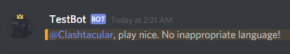

Watch Your Language!
One of the unfortunate side effects of having an online community is that the anonymity of the internet can make it easier for some individuals use offensive language. We want to run a server with positive interactions between users, which means that the use of certain words should be filtered out. We'll write a new event listener for TestBot to solve this problem:
var Bad_Words = ["here", "are", "some", "bad", "words"];
Bot.on('message', function(message)
{
for(var i = 0; i < Bad_Words.length; i++)
{
if(message.content.includes(Bad_Words[i]))
{
message.delete();
message.reply('play nice. No inappropriate language!');
break;
}
}
});
Let's break this down. First we made an array of some sample words that we don't believe will contribute to constructive conversation on the server. Then we make a listener that will listen for 'message' events. If a message is submitted to the server, the message object is passed to the callback function. A for loop will then cycle through every word in the array of bad words, and check to see if the string stored in the content property of the message object includes one of those words. If so, the bot will use the delete method of the message class to remove the message (removing the offensive word) and then use the reply method to directly address the user who sent it.
What if someone edits their message to include something inappropriate? The listener above won't be able to handle this situation. However, with a little tweaking, we can make another one that will take care of this predicament as well:
Bot.on('messageUpdate', function(oldMessage, newMessage)
{
for(var i = 0; i < Bad_Words.length; i++)
{
if(newMessage.content.includes(Bad_Words[i]))
{
newMessage.delete();
newMessage.reply('play nice. No inappropriate language!');
break;
}
}
});
This is a fairly similar listener, but instead of listening for a "message" event, it listens for the "messageUpdate" event, which is the event emitted when someone edits the content of a message. The loop inside the callback will check to see if the content of the edited message contains inappropriate language and handle it in the same way.